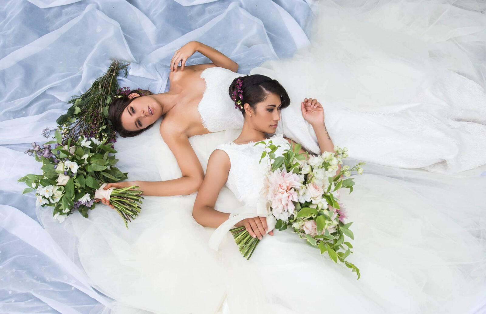
Bespoke Bridal Couture · Melbourne
Timeless, elegant, beautiful. Bespoke Wedding Dresses in Melbourne
We are a private bridal atelier in Berwick, Melbourne, creating bespoke, hand-made wedding dresses inspired by your vision, drafted to your measurements, and sewn by hand in our own studio.
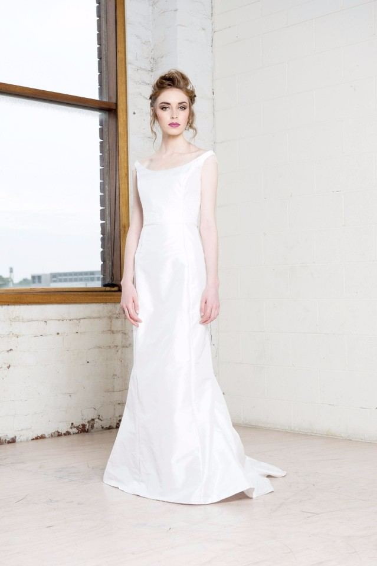
- Est. 2013Melbourne Couture
- ◆Handmade in Berwick
- ◆Complimentary Consultation
- ◆Evening Appointments Available
01 · The Atelier
Not made in a factory. Made for you.
Bryony Jayne Bridal Couture is a boutique, private studio in the heart of Berwick. Since 2013 we have helped brides right across Melbourne and Victoria create perfect, handmade and custom wedding dresses.
From petite to fuller figure, we love working with the brides who choose us to create their bespoke, one-of-a-kind dress, and to bring what was once perhaps just a dream into reality. Whether it is a vision you have always imagined or a style you have recently fallen for, we work with the utmost consideration to your budget and expectations.
- Drawn from your visionPhotos, a sketch, a colour, a grandmother's lace: we begin wherever you begin.
- Cut to your measuresPatterned and fitted to your body, not to a standard size on a label.
- Finished by handFine silks, French lace and delicate needlework, worked in our own studio.
- Made to be worn all dayDesigned around how you will move, sit, dance and live in it.

- Established 2013
- Bachelor of Fashion, Box Hill Institute
- Trained at Helen Brownhill & Raffaele Ciuca
- Twice a finalist, Gown of the Year


Meet your dressmaker
Bryony Jayne Reardon
With over a decade creating bridal gowns independently in Melbourne, Bryony works with each bride one-on-one from initial sketch to final hand stitch. Every gown is individually drafted to your measurements and sewn by hand in our private Berwick atelier.
- Est. 2013 in Melbourne
- Bachelor of Fashion, Box Hill Institute
- Trained at Helen Brownhill & Raffaele Ciuca
- Twice Gown of the Year Finalist
02 · Signature Gowns
Try one on, or make it entirely your own.
Seven signature studio gowns available to try in Berwick. Designed with fine silks and French lace to complement your shape and natural beauty. Try them on in the studio, or use one as the foundation for your custom bespoke dress.
Show
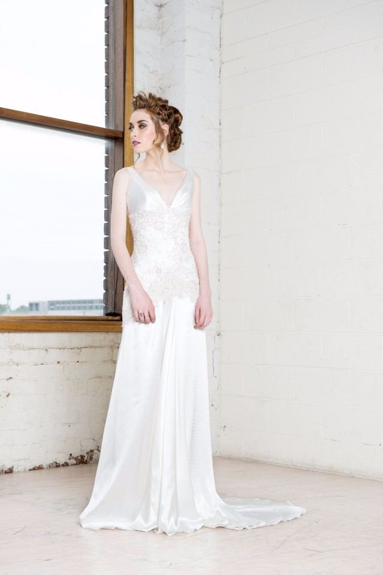
No. 02Briar Rose
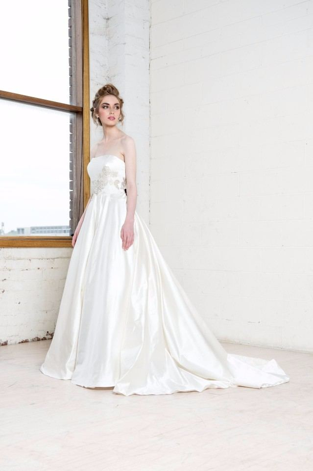
No. 03Delfene
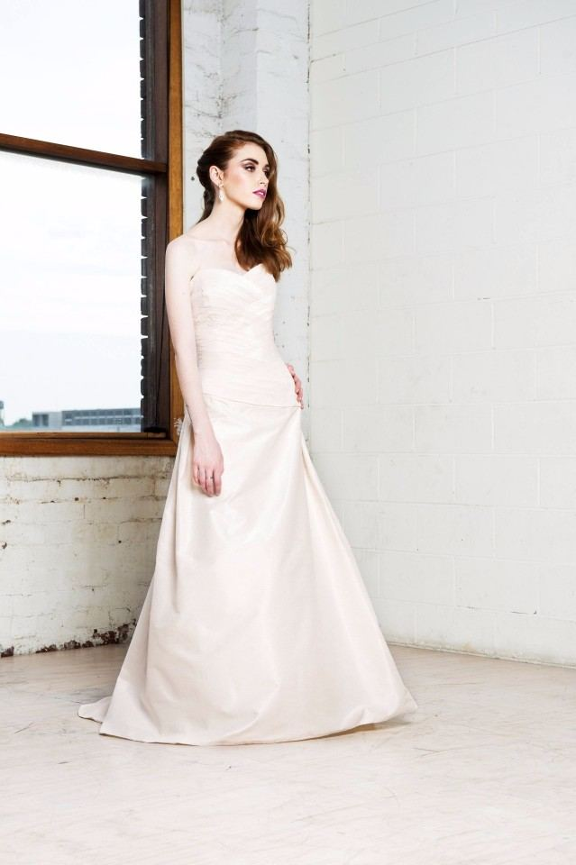
No. 04Eve
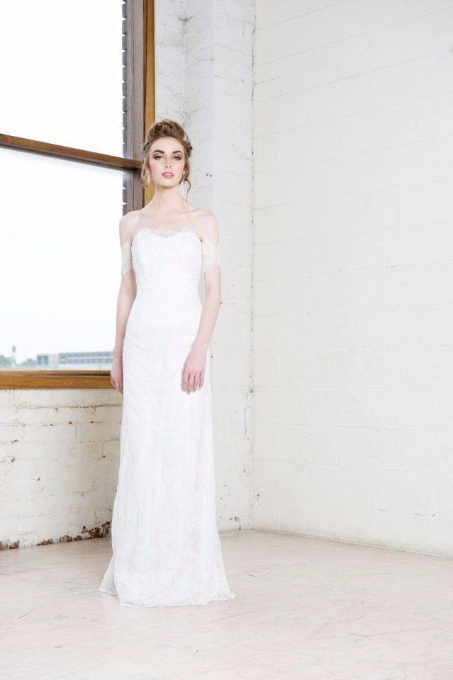
No. 05Isadora
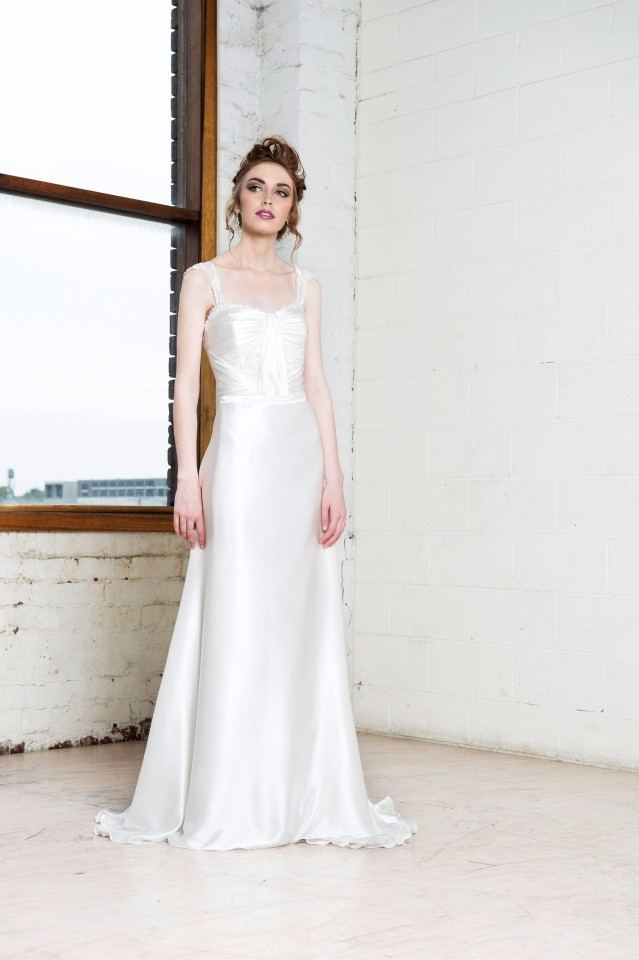
No. 06Story
No. 07Winter
None of them quite you?
Bring the photographs, the drawings, or the heirloom fabric in a drawer at home. We will design from nothing at all, if that is what your dress needs.
Talk it through with BryonyEvery gown here can be made as shown, or re-worked with you: neckline, sleeves, train, colour and fabric changed until it is unmistakably yours.
03 · Two Ways in the Studio
Designed entirely for you, or begin with a studio gown.
Designed entirely for you
We offer a unique, personalised design and creation service catering for your individual taste. Whether it is photographs or drawings you bring to draw inspiration from, a classical design or something a little more contemporary: silk or chiffon, or a truly unique hand-crafted dress you have always dreamed of, we will work with you to make the creation of your gown a memorable experience in itself.
- Design, fabric and budget considered together, from the first conversation
- Patterned, cut and sewn by hand in the Berwick studio
- Fittings worked around your schedule, evenings included
- Bridesmaids' dresses and bridal party accessories too
Begin with a Bryony Jayne gown
On display and available in the studio is our range of signature ready-to-wear gowns, suited to individual tastes. Designed and created with fine fabrics, embroidery and needlework to complement your figure. Try one on, fall for it, and let us adapt it until it fits nobody but you.
- Seven signature studio gowns to try in the studio
- Altered to your figure, hemline and neckline
- Adapt sleeves, back detail or fabric combinations
- A calm starting point for a personalised bridal look
All consultations are complimentary, and there is no obligation during your first appointment.
04 · Real Brides
Made here. Worn everywhere.
A few of the brides who trusted Bryony to make the dress they married in.
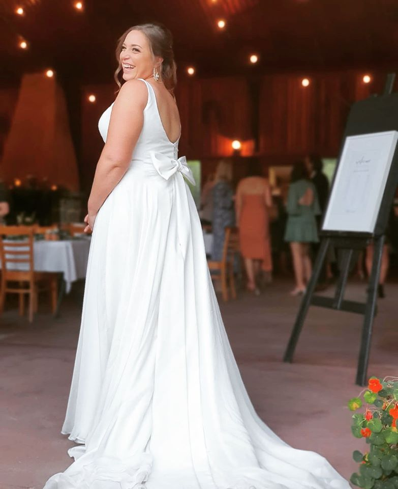
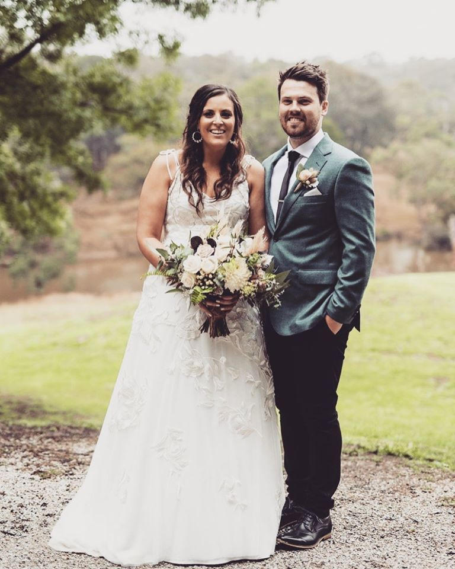
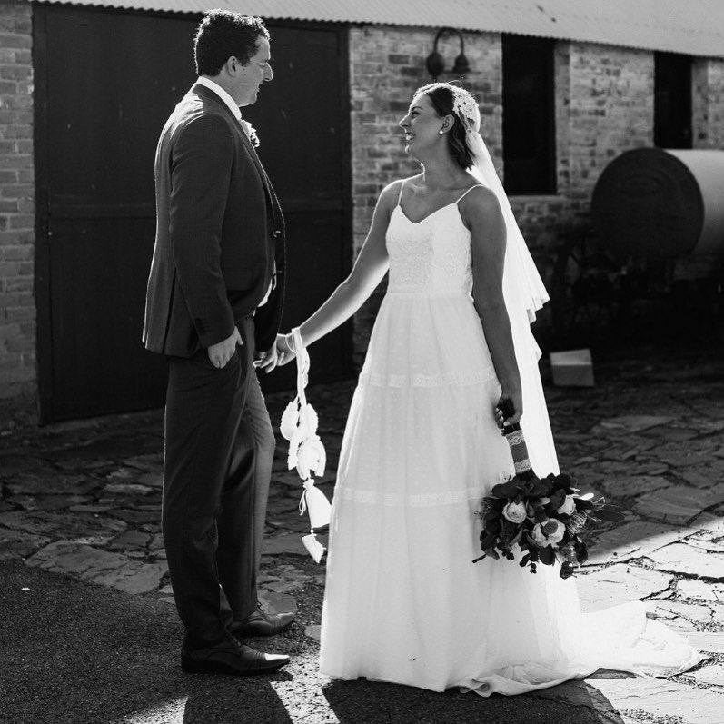
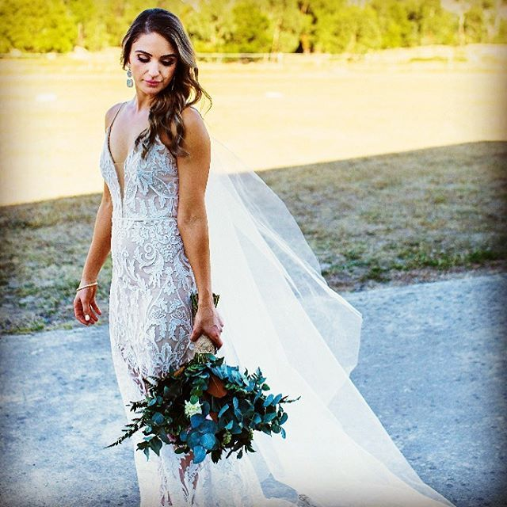
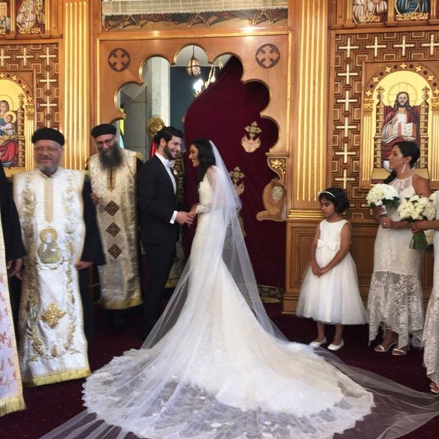
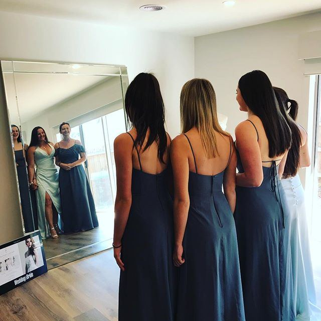
Thank you Bryony! My day was magical because I had the most perfect dress on.
Thanks Bryony, I absolutely adore my dress and love the way it turned out. I wasn't sure at first how it would all go but it all just worked, and I can't thank you enough.
Bryony, thank you from the bottom of our hearts. Kristy and I were so happy with our dresses and everything you did for us to make our day so special. Every time we look at our photos we remember just how great a day it was.
Thanks Bryony, I absolutely love my dress and I know it's something I'll cherish forever.
-
01
Say hello
Any timeYou are welcome to contact us for a complimentary, no-obligation appointment. Tell us roughly when you are getting married and what you picture. We are flexible to your schedule, with evening appointments available if you need them.
-
02
The first visit
To beginDuring your first visit we discuss our services, ideas and pricing, and suggest how to achieve your vision. Bring photographs, drawings, pinned images, a favourite colour: anything that shows what you are naturally drawn to.
-
03
Design, fabric & plan
6–9 months outWe take the time to discuss what fabrics, style, lines and silhouette you want to achieve, and how the dress will fit and suit your entire wedding day: the venue, the weather, and dancing into the night. Then fabrics are selected and pattern making begins.
-
04
First fitting
2–6 months outCome with your wedding shoes and chosen undergarments along with you, as they change how a gown sits and falls. This is the fitting to assess drape, movement and silhouette, and to communicate any adjustments you would like.
-
05
Second fitting
About 1 month outAdjustments from the first fitting are refined. You should be able to move freely and comfortably in your gown by now. Bring the accessories or veil you plan to wear to see the complete look come together.
-
06
Final fitting & handover
Before the weddingAn exciting and practical day. We ensure you understand how the dress works: the zip, delicate buttons, bustling and corset support, so bring whoever will be helping you dress on the day. We discuss gown care, then you take your dress home.
06 · Craft & Detail
Inside the studio.
Sketching, hand-worked lace and fittings held in our private Berwick atelier: photographed here mid-making.


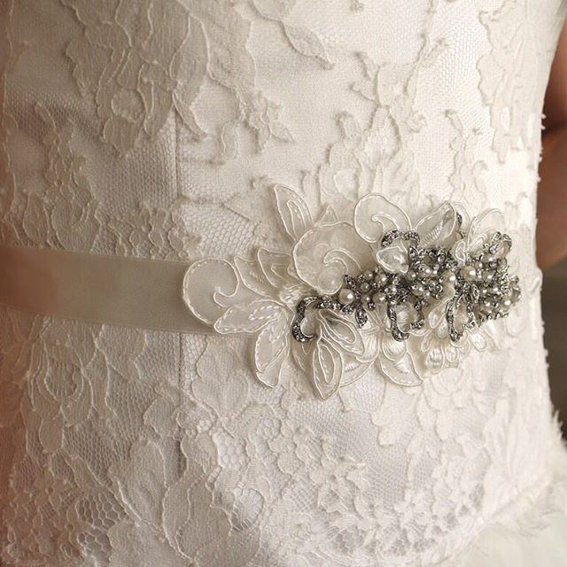

Drag photographs or use arrow keys
07 · The Dressmaker
A decade of one dress at a time.
Bryony Jayne Reardon has worked in the Melbourne bridal industry independently as a dressmaker for over ten years, and previously at both Helen Brownhill in Malvern and Raffaele Ciuca in Armadale, before establishing her own bridal label, Bryony Jayne Bridal Couture, in early 2013.
Prior to working independently, Bryony received a Bachelor of Fashion from Box Hill Institute, and emerged twice in a row as a finalist in Gown of the Year: the creative exhibition show organised and run by the late, iconic Guy Barton, held annually at the Crown Ballroom.
“One of the best beach wedding dresses we’ve seen.” New Idea Magazine, on our Winter gown: named one of the top five plus-size dresses in Melbourne
- Trained
- Bachelor of Fashion, Box Hill Institute
- Before her own label
- Helen Brownhill (Malvern) · Raffaele Ciuca (Armadale)
- Recognised
- Twice a consecutive finalist, Gown of the Year · Crown Ballroom
- Independent since
- 2013, from a private studio in Berwick
08 · The Journal
Things we get asked most.
Guides and notes from the studio on fabric, silhouette, fitting and the small decisions that make a dress feel right. Written by Bryony from her Berwick atelier.
- Bridal GuideFittings The wedding dress fitting process What happens at the first, second and final fitting: and what to bring to each appointment.
- Bridal GuideFabrics Wedding dress fabrics: A simple guide Chiffon, silk, satin and lace: how each fabric moves, wears, breathes and photographs.
- Bridal GuideSilhouettes Wedding dress silhouettes: A guide Understanding key bridal shapes and which lines flatter your natural figure.
09 · Book a Consultation
Come to the studio. Bring everything.
Our bridal studio is in Berwick, Melbourne, and is by appointment only: so the space, the rail of gowns and the conversation are yours alone.
We are flexible to your schedule, with evening appointments available if you need them. Design, fabric and budget are discussed openly during your complimentary consultation before any commitment is made.
- Call the studio0433 972 656The quickest way to reach Bryony directly.
- Write to Bryonybryony@bryonyjayne.com.auEvery enquiry is answered personally.
- WhereBerwick, MelbourneBy appointment only · catering to Melbourne and the South East
- Follow the studioInstagramFacebookNew gowns, fittings and studio finishes.
Servicing brides from
- Beaconsfield
- Berwick
- Clyde
- Cranbourne
- Dandenong
- Frankston
- Mornington
- Narre Warren
- Pakenham
- Rowville